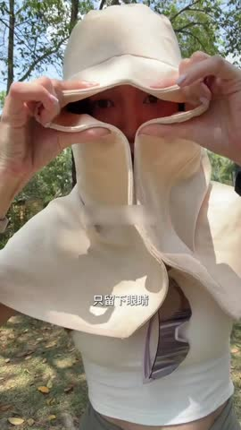

🎬Top5 素材关键帧拆解5/5 条已抽帧 · 6 帧对应 A→F 脚本节奏
TOP1 韩版条纹防晒帽 · 女防晒渔夫帽 CTR 4.31%|3s完播 36.8%|播放 10.3s
A防晒痛点引入0-3s
B产品功能展示3-12s
C佩戴效果展示12-30s
D场景化体验30-50s
E品质背书50-65s
💡 脚本创意拆解与落地建议：该素材为韩版时尚条纹夏季户外遮阳防晒帽。定位“日常轻熟风、时尚与功能并重”。开篇（0-3s）以“夏日防晒也想保持高级感”、“不想让防晒帽毁了精致穿搭”的时尚穿搭痛点作为钩子。中段（3-30s）展示条纹遮阳布的柔和质感与微距缝制工艺特写，高级不单调；随之由高颜值女博主在耳畔展示，空顶设计不仅“不闷热不毁发型”，其条纹撞色帽檐更显得复古优雅。后半段（30s-65s）植入咖啡馆下午茶、高尔夫出游、沙滩拍照等多阳光且优雅的场景，配合透气舒适度和帽子不压发印的品质实测进行背书。收尾（65s+）抛出厂家新品大折、前100名送精美编织防风绳，在绝高性价比和赠品推力下，促成小资成熟客群快速转化。
落地建议：1. 开篇3秒建议直接用“防晒又不闷发、通勤度假两相宜”大字，打消女性对大黑帽闷坏精致发型的顾虑。2. 针对“空顶”，可特写扎高马尾穿戴的优雅过程，展现发型的清爽与多变性。
⚡ WorkRally 视频生成脚本
🚀 腾讯智影 这是一条以韩版条纹防晒帽为主角的八秒带货短视频脚本。整体风格设定在海边或草地或旅游打卡，由一位28-45岁度假女性担任出镜模特，色调采用海蓝加米黄海滨色调的画面氛围，配合夏日TropicalHouse作为背景音乐，由甜美少女声负责口播配音，字幕样式选择苹方圆体加白底黑边。全片节奏紧凑，遵循前一秒拦人、第二到三秒种草、第三到五秒拔草、第五到八秒收割的爆款转化结构。
开篇第零到第一秒是黄金钩子段落。镜头以中景慢推近的方式进入画面，采用大约五十毫米焦距等效的视角，画面里出现一位28-45岁度假女性，长裙或牛仔短裤，长发或辫子，此刻她身上没有任何饰品点缀，表情略带困惑或失落，整个人显得平淡缺少亮点。环境布置在海边或草地或旅游打卡，柔和的侧逆光打在人物身上，画面色调走的是海蓝加米黄海滨色调的视觉感受。镜头从中景以零点三倍的慢速节奏推近到胸口和锁骨位置，营造出一种期待感。此时产品还没有出现，画面留白，屏幕中下位置弹出一行字幕，文字内容是姐妹们天气特别热的时候一定要入这种特别轻薄特别透气的用能够360度无死角把你的脸遮挡起来的帽子但是要买对正版。听觉上背景音乐刚刚起调，低音铺底，再配合一声轻巧的提示音作为视觉钩子的补充，目的是用颜值或痛点反差让用户在前一秒就停下手指，不再划走。
接下来第一到第三秒是产品引爆和微距特写段落。镜头切换为微距特写，采用九十毫米微距镜头加上一档浅景深的效果。画面里能看到一双精致裸色美甲的纤细手指轻轻拈起韩版条纹防晒帽，背景是海边或草地或旅游打卡虚化后形成的奶油色光斑。镜头围绕产品做三百六十度的缓慢环绕旋转，焦点前后微微移动，制造出仿佛产品在呼吸的视觉效果。画面重点突出大檐折叠或UPF50加标签或可调节抽绳，产品在画面中占据百分之六十的视觉权重。屏幕中下浮现字幕看看这个细节。配乐在这一段进入主旋律，配合竖琴轻拨或类似玉石碰撞的清脆音效，通过把材质质感放大到极致，触发用户对产品物超所值的认知判断。
紧接着第三到第五秒是上身演示和反差展现段落。镜头切换为中近景，焦距在三十五毫米左右，整段以零点七倍的慢动作呈现。还是同一位模特，此时她已经戴上了韩版条纹防晒帽，自信地微笑回眸，头部微微上仰展现优雅线条。场景换到海边或草地或旅游打卡更通透的窗边，自然光透进来打亮人物。镜头沿着弧线从人物的四分之三侧面缓缓移动到正脸，重点呈现韩版条纹防晒帽的上身效果，产品和服饰之间形成颜色或质感上的反差呼应。字幕跟进显示上身效果绝了。背景音乐推进到副歌部分，配合一声转场的呼啸音效，通过上身前后的强烈反差，触发用户产生我也想要的代入感。
最后第五到第八秒是信任背书和转化钩子段落。镜头采用分屏快剪的处理方式，左半边是产品细节的静态特写，右半边是证书钢印或礼盒拆封或限时优惠标签的快速切换。画面里有一双手负责完成展示证书拆开礼盒点亮价格爆点字这些动作，背景是纯白柔光台面或者深色丝绒台面，烘托出仪式感。产品本身在这一段以鉴定证书加高定礼盒加限时优惠价的组合方式呈现。屏幕中下打出收尾字幕限时优惠抓紧。配乐推向高潮，混入收银机的提示音以及限时倒计时的紧迫音效，通过权威背书加上紧迫感再加上仪式感的三重叠加，把用户推到下单转化的临界点。
下面这一段是把上面所有信息浓缩后可以直接粘贴给 AI 视频生成模型的中文提示词。
竖屏九比十六，时长十二秒。第零到一秒，中景慢推近一位28-45岁度假女性在海边或草地或旅游打卡里，表情略带困惑没有饰品，柔和侧逆光，色调走海蓝加米黄海滨色调的视觉感受。第一到三秒，微距三百六十度旋转展示韩版条纹防晒帽，重点呈现大檐折叠或UPF50加标签或可调节抽绳，奶油色虚化背景。第三到五秒，中近景慢动作下模特已戴上韩版条纹防晒帽，自信微笑回眸，窗边自然光，弧线运镜从侧面到正面。第五到八秒，分屏快剪展示鉴定证书和高定礼盒，限时优惠标签闪烁。整体走电影感商业广告风格，画面里不出现任何文字字幕水印，高清画质，光线柔和有层次，皮肤通透自然。
下面这一段是从原片提取的真实口播文案，可以直接用来做配音底稿或字幕原文。
姐妹们天气特别热的时候一定要入这种特别轻薄特别透气的用能够360度无死角把你的脸遮挡起来的帽子但是要买对正版
TOP2 【轻奢名品】日系显脸小渔 夫帽女2026新款夏季户外百 搭遮阳帽321068… · 女渔夫帽 CTR 2.83%|3s完播 38.2%|播放 9.2s
C佩戴效果展示12-30s
D场景化体验30-50s
💡 脚本创意拆解与落地建议：该素材为日系“显脸小”高颅顶双面戴夏季女士遮阳防晒帽。主打一帽双色、百搭高颜值的性价比卖点。开篇（0-3s）以“戴普通防晒帽像老太婆、没气质、塌颅顶显脸大”等大众头型困扰引入，对比突出此款高颅顶修容奇效。中段（3-30s）先特写展示高密聚酯纤维材质对紫外线的遮挡和双面撞色缝线细节；随后由不同面部轮廓女模特上头试戴，重点展示双面佩戴的两种色系效果和“戴上秒变高颅顶、下巴线条收紧”的前后强反差。后半段（30s-65s）展示度假、骑车、带娃遛弯等高频防晒场景，演示其极佳的透气性与国家防晒报告权威背书。结尾（65s+）推出双重戴法等于“买一送一”、限时低单价工厂放利福利，以强高性价比心智锁客。
落地建议：1. 建议将“一帽两戴”的双色变装，在前3秒通过快速卡点闪现，配合“买一顶得两色”的字幕，瞬间抓住高性价比买家。2. 特写遮阳布在头顶处形成的自然圆拱，直观展现是如何拯救“扁头、细软塌”的发型奇效。
⚡ WorkRally 视频生成脚本
🚀 腾讯智影 这是一条以日系显脸小渔夫帽女2026新款夏季户外百搭遮阳为主角的八秒带货短视频脚本。整体风格设定在海边或草地或旅游打卡，由一位28-45岁度假女性担任出镜模特，色调采用海蓝加米黄海滨色调的画面氛围，配合夏日TropicalHouse作为背景音乐，由甜美少女声负责口播配音，字幕样式选择苹方圆体加白底黑边。全片节奏紧凑，遵循前一秒拦人、第二到三秒种草、第三到五秒拔草、第五到八秒收割的爆款转化结构。
开篇第零到第一秒是黄金钩子段落。镜头以中景慢推近的方式进入画面，采用大约五十毫米焦距等效的视角，画面里出现一位28-45岁度假女性，长裙或牛仔短裤，长发或辫子，此刻她身上没有任何饰品点缀，表情略带困惑或失落，整个人显得平淡缺少亮点。环境布置在海边或草地或旅游打卡，柔和的侧逆光打在人物身上，画面色调走的是海蓝加米黄海滨色调的视觉感受。镜头从中景以零点三倍的慢速节奏推近到胸口和锁骨位置，营造出一种期待感。此时产品还没有出现，画面留白，屏幕中下位置弹出一行字幕，文字内容是跟着女明星买同款。听觉上背景音乐刚刚起调，低音铺底，再配合一声轻巧的提示音作为视觉钩子的补充，目的是用颜值或痛点反差让用户在前一秒就停下手指，不再划走。
接下来第一到第三秒是产品引爆和微距特写段落。镜头切换为微距特写，采用九十毫米微距镜头加上一档浅景深的效果。画面里能看到一双精致裸色美甲的纤细手指轻轻拈起日系显脸小渔夫帽女2026新款夏季户外百搭遮阳，背景是海边或草地或旅游打卡虚化后形成的奶油色光斑。镜头围绕产品做三百六十度的缓慢环绕旋转，焦点前后微微移动，制造出仿佛产品在呼吸的视觉效果。画面重点突出大檐折叠或UPF50加标签或可调节抽绳，产品在画面中占据百分之六十的视觉权重。屏幕中下浮现字幕唯一没有财雷的。配乐在这一段进入主旋律，配合竖琴轻拨或类似玉石碰撞的清脆音效，通过把材质质感放大到极致，触发用户对产品物超所值的认知判断。
紧接着第三到第五秒是上身演示和反差展现段落。镜头切换为中近景，焦距在三十五毫米左右，整段以零点七倍的慢动作呈现。还是同一位模特，此时她已经戴上了日系显脸小渔夫帽女2026新款夏季户外百搭遮阳，自信地微笑回眸，头部微微上仰展现优雅线条。场景换到海边或草地或旅游打卡更通透的窗边，自然光透进来打亮人物。镜头沿着弧线从人物的四分之三侧面缓缓移动到正脸，重点呈现日系显脸小渔夫帽女2026新款夏季户外百搭遮阳的上身效果，产品和服饰之间形成颜色或质感上的反差呼应。字幕跟进显示就是露丝的这款防晒帽。背景音乐推进到副歌部分，配合一声转场的呼啸音效，通过上身前后的强烈反差，触发用户产生我也想要的代入感。
最后第五到第八秒是信任背书和转化钩子段落。镜头采用分屏快剪的处理方式，左半边是产品细节的静态特写，右半边是证书钢印或礼盒拆封或限时优惠标签的快速切换。画面里有一双手负责完成展示证书拆开礼盒点亮价格爆点字这些动作，背景是纯白柔光台面或者深色丝绒台面，烘托出仪式感。产品本身在这一段以鉴定证书加高定礼盒加限时优惠价的组合方式呈现。屏幕中下打出收尾字幕它就是从我们的脸到脖子到肩膀。配乐推向高潮，混入收银机的提示音以及限时倒计时的紧迫音效，通过权威背书加上紧迫感再加上仪式感的三重叠加，把用户推到下单转化的临界点。
下面这一段是把上面所有信息浓缩后可以直接粘贴给 AI 视频生成模型的中文提示词。
竖屏九比十六，时长十二秒。第零到一秒，中景慢推近一位28-45岁度假女性在海边或草地或旅游打卡里，表情略带困惑没有饰品，柔和侧逆光，色调走海蓝加米黄海滨色调的视觉感受。第一到三秒，微距三百六十度旋转展示日系显脸小渔夫帽女2026新款夏季户外百搭遮阳，重点呈现大檐折叠或UPF50加标签或可调节抽绳，奶油色虚化背景。第三到五秒，中近景慢动作下模特已戴上日系显脸小渔夫帽女2026新款夏季户外百搭遮阳，自信微笑回眸，窗边自然光，弧线运镜从侧面到正面。第五到八秒，分屏快剪展示鉴定证书和高定礼盒，限时优惠标签闪烁。整体走电影感商业广告风格，画面里不出现任何文字字幕水印，高清画质，光线柔和有层次，皮肤通透自然。
下面这一段是从原片提取的真实口播文案，可以直接用来做配音底稿或字幕原文。
跟着女明星买同款,唯一没有财雷的,就是露丝的这款防晒帽。它就是从我们的脸到脖子到肩膀,全都照顾到了。去年我在宁夏玩一周,给身边所有的妈妈都种草了一遍。
TOP3 【轻奢名品】日系显脸小渔 夫帽女2026新款夏季户外百 搭遮阳帽321068… · 女渔夫帽 CTR 2.70%|3s完播 35.5%|播放 6.9s

C佩戴效果展示12-30sE品质背书50-65s
F促销引导65s+
💡 脚本创意拆解与落地建议：该素材为日系“显脸小”夏季女士遮阳防晒渔夫帽。视频采用高颜值模特真人示范的“痛点对标+视觉溢价”逻辑。开篇（0-3s）以烈日当空和紫外线晒黑、长斑、衰老的户外出行痛点迅速制造危机感。中段（3-30s）先通过特写镜头演示其特制的UPF50+黑胶黑科技内里与超大帽檐剪裁，生动展示透气性和物理隔绝功能；随后通过多角度佩戴展示，重点突出帽檐形成的阴影线条完美贴合面部、实现“1秒显脸小、减龄显瘦”的强视觉前后反差。后半段（30s-65s）将场景延伸至海边度假、露营、骑行等高频日常户外生活，并通过检测报告和折叠揉捏不变形的超轻便携特性进行品质背书，消除买家后顾之忧。收尾（65s+）配合厂家直供、第二件半价等促销活动，打出高性价比优势引导下单。
落地建议：1. 建议引入紫外线卡实测变色或红外热成像仪遮挡实测，将黑科技防晒效果直观可视化。2. 针对“显脸小”卖点，可加入与普通窄边帽的左右同框对比图，让视觉效果更加直白。
⚡ WorkRally 视频生成脚本
🚀 腾讯智影 这是一条以日系显脸小渔夫帽女2026新款夏季户外百搭遮阳为主角的八秒带货短视频脚本。整体风格设定在海边或草地或旅游打卡，由一位28-45岁度假女性担任出镜模特，色调采用海蓝加米黄海滨色调的画面氛围，配合夏日TropicalHouse作为背景音乐，由甜美少女声负责口播配音，字幕样式选择苹方圆体加白底黑边。全片节奏紧凑，遵循前一秒拦人、第二到三秒种草、第三到五秒拔草、第五到八秒收割的爆款转化结构。
开篇第零到第一秒是黄金钩子段落。镜头以中景慢推近的方式进入画面，采用大约五十毫米焦距等效的视角，画面里出现一位28-45岁度假女性，长裙或牛仔短裤，长发或辫子，此刻她身上没有任何饰品点缀，表情略带困惑或失落，整个人显得平淡缺少亮点。环境布置在海边或草地或旅游打卡，柔和的侧逆光打在人物身上，画面色调走的是海蓝加米黄海滨色调的视觉感受。镜头从中景以零点三倍的慢速节奏推近到胸口和锁骨位置，营造出一种期待感。此时产品还没有出现，画面留白，屏幕中下位置弹出一行字幕，文字内容是跟着女明星买同款。听觉上背景音乐刚刚起调，低音铺底，再配合一声轻巧的提示音作为视觉钩子的补充，目的是用颜值或痛点反差让用户在前一秒就停下手指，不再划走。
接下来第一到第三秒是产品引爆和微距特写段落。镜头切换为微距特写，采用九十毫米微距镜头加上一档浅景深的效果。画面里能看到一双精致裸色美甲的纤细手指轻轻拈起日系显脸小渔夫帽女2026新款夏季户外百搭遮阳，背景是海边或草地或旅游打卡虚化后形成的奶油色光斑。镜头围绕产品做三百六十度的缓慢环绕旋转，焦点前后微微移动，制造出仿佛产品在呼吸的视觉效果。画面重点突出大檐折叠或UPF50加标签或可调节抽绳，产品在画面中占据百分之六十的视觉权重。屏幕中下浮现字幕唯一没有踩雷的。配乐在这一段进入主旋律，配合竖琴轻拨或类似玉石碰撞的清脆音效，通过把材质质感放大到极致，触发用户对产品物超所值的认知判断。
紧接着第三到第五秒是上身演示和反差展现段落。镜头切换为中近景，焦距在三十五毫米左右，整段以零点七倍的慢动作呈现。还是同一位模特，此时她已经戴上了日系显脸小渔夫帽女2026新款夏季户外百搭遮阳，自信地微笑回眸，头部微微上仰展现优雅线条。场景换到海边或草地或旅游打卡更通透的窗边，自然光透进来打亮人物。镜头沿着弧线从人物的四分之三侧面缓缓移动到正脸，重点呈现日系显脸小渔夫帽女2026新款夏季户外百搭遮阳的上身效果，产品和服饰之间形成颜色或质感上的反差呼应。字幕跟进显示就是露丝的这款防晒帽。背景音乐推进到副歌部分，配合一声转场的呼啸音效，通过上身前后的强烈反差，触发用户产生我也想要的代入感。
最后第五到第八秒是信任背书和转化钩子段落。镜头采用分屏快剪的处理方式，左半边是产品细节的静态特写，右半边是证书钢印或礼盒拆封或限时优惠标签的快速切换。画面里有一双手负责完成展示证书拆开礼盒点亮价格爆点字这些动作，背景是纯白柔光台面或者深色丝绒台面，烘托出仪式感。产品本身在这一段以鉴定证书加高定礼盒加限时优惠价的组合方式呈现。屏幕中下打出收尾字幕它就是从我们的脸到脖子到肩膀。配乐推向高潮，混入收银机的提示音以及限时倒计时的紧迫音效，通过权威背书加上紧迫感再加上仪式感的三重叠加，把用户推到下单转化的临界点。
下面这一段是把上面所有信息浓缩后可以直接粘贴给 AI 视频生成模型的中文提示词。
竖屏九比十六，时长十二秒。第零到一秒，中景慢推近一位28-45岁度假女性在海边或草地或旅游打卡里，表情略带困惑没有饰品，柔和侧逆光，色调走海蓝加米黄海滨色调的视觉感受。第一到三秒，微距三百六十度旋转展示日系显脸小渔夫帽女2026新款夏季户外百搭遮阳，重点呈现大檐折叠或UPF50加标签或可调节抽绳，奶油色虚化背景。第三到五秒，中近景慢动作下模特已戴上日系显脸小渔夫帽女2026新款夏季户外百搭遮阳，自信微笑回眸，窗边自然光，弧线运镜从侧面到正面。第五到八秒，分屏快剪展示鉴定证书和高定礼盒，限时优惠标签闪烁。整体走电影感商业广告风格，画面里不出现任何文字字幕水印，高清画质，光线柔和有层次，皮肤通透自然。
下面这一段是从原片提取的真实口播文案，可以直接用来做配音底稿或字幕原文。
跟着女明星买同款,唯一没有踩雷的,就是露丝的这款防晒帽。它就是从我们的脸到脖子到肩膀,全都照顾到了。去年我在宁夏玩一周,给身边所有的妈妈都种草了一遍。
TOP4 2026新款灯罩帽子大帽檐环绕遮阳防晒帽可折叠大头围渔夫太阳帽 · 男防晒渔夫帽 CTR 6.15%|3s完播 38.7%|播放 8.1s
A防晒痛点引入0-3s
B产品功能展示3-12s
C佩戴效果展示12-30s
D场景化体验30-50s
E品质背书50-65s
💡 脚本创意拆解与落地建议：该素材为男士户外夏季“大帽檐”遮阳速干防晒渔夫帽。专门切中户外骑行、钓鱼及越野人士对“全方位遮阳、不掉落”的强诉求。开篇（0-3s）以骑车帽子被风吹落、脖子和后脑勺被暴晒脱皮的尴尬生活镜头切入。中段（3-30s）先特写12cm超大帽檐形成的“360度环绕式遮阳阴影”，覆盖眼角与颈部防黑；随后特写展示可折叠黑科技（揉搓不留痕、可收纳至口袋）、防风抽绳和透气网孔面料，吸汗排汗一秒即干。后半段（30s-65s）切换至户外钓鱼、荒漠徒步、夏日工地等严苛多暴晒场景，展示其在狂风大雨中的防水性与防紫外线检测资质背书。结尾（65s+）抛出买一送一、赠送冰凉贴和高性价比标签，促使大批户外、钓鱼爱好者快速拍下。
落地建议：1. 开篇前3秒建议用“不畏强风、专业遮阳”大字报和强风吹不倒帽檐的抗风动感实测切片，直接解决男士对遮阳帽轻飘的顾虑。2. 在展示折叠收纳时，可展示将其卷成小卷、放进口袋的顺滑动作，最大化展示便携性。
⚡ WorkRally 视频生成脚本
🚀 腾讯智影 这是一条以2026新款灯罩帽子大帽檐环绕遮阳防晒帽可折叠大头为主角的八秒带货短视频脚本。整体风格设定在海边或草地或旅游打卡，由一位28-45岁度假女性担任出镜模特，色调采用海蓝加米黄海滨色调的画面氛围，配合夏日TropicalHouse作为背景音乐，由甜美少女声负责口播配音，字幕样式选择苹方圆体加白底黑边。全片节奏紧凑，遵循前一秒拦人、第二到三秒种草、第三到五秒拔草、第五到八秒收割的爆款转化结构。
开篇第零到第一秒是黄金钩子段落。镜头以中景慢推近的方式进入画面，采用大约五十毫米焦距等效的视角，画面里出现一位28-45岁度假女性，长裙或牛仔短裤，长发或辫子，此刻她身上没有任何饰品点缀，表情略带困惑或失落，整个人显得平淡缺少亮点。环境布置在海边或草地或旅游打卡，柔和的侧逆光打在人物身上，画面色调走的是海蓝加米黄海滨色调的视觉感受。镜头从中景以零点三倍的慢速节奏推近到胸口和锁骨位置，营造出一种期待感。此时产品还没有出现，画面留白，屏幕中下位置弹出一行字幕，文字内容是真的超推荐这个大冒险的防晒帽。听觉上背景音乐刚刚起调，低音铺底，再配合一声轻巧的提示音作为视觉钩子的补充，目的是用颜值或痛点反差让用户在前一秒就停下手指，不再划走。
接下来第一到第三秒是产品引爆和微距特写段落。镜头切换为微距特写，采用九十毫米微距镜头加上一档浅景深的效果。画面里能看到一双精致裸色美甲的纤细手指轻轻拈起2026新款灯罩帽子大帽檐环绕遮阳防晒帽可折叠大头，背景是海边或草地或旅游打卡虚化后形成的奶油色光斑。镜头围绕产品做三百六十度的缓慢环绕旋转，焦点前后微微移动，制造出仿佛产品在呼吸的视觉效果。画面重点突出大檐折叠或UPF50加标签或可调节抽绳，产品在画面中占据百分之六十的视觉权重。屏幕中下浮现字幕是我的自留判。配乐在这一段进入主旋律，配合竖琴轻拨或类似玉石碰撞的清脆音效，通过把材质质感放大到极致，触发用户对产品物超所值的认知判断。
紧接着第三到第五秒是上身演示和反差展现段落。镜头切换为中近景，焦距在三十五毫米左右，整段以零点七倍的慢动作呈现。还是同一位模特，此时她已经戴上了2026新款灯罩帽子大帽檐环绕遮阳防晒帽可折叠大头，自信地微笑回眸，头部微微上仰展现优雅线条。场景换到海边或草地或旅游打卡更通透的窗边，自然光透进来打亮人物。镜头沿着弧线从人物的四分之三侧面缓缓移动到正脸，重点呈现2026新款灯罩帽子大帽檐环绕遮阳防晒帽可折叠大头的上身效果，产品和服饰之间形成颜色或质感上的反差呼应。字幕跟进显示它是今年新版型啊。背景音乐推进到副歌部分，配合一声转场的呼啸音效，通过上身前后的强烈反差，触发用户产生我也想要的代入感。
最后第五到第八秒是信任背书和转化钩子段落。镜头采用分屏快剪的处理方式，左半边是产品细节的静态特写，右半边是证书钢印或礼盒拆封或限时优惠标签的快速切换。画面里有一双手负责完成展示证书拆开礼盒点亮价格爆点字这些动作，背景是纯白柔光台面或者深色丝绒台面，烘托出仪式感。产品本身在这一段以鉴定证书加高定礼盒加限时优惠价的组合方式呈现。屏幕中下打出收尾字幕内扣的灯罩帽。配乐推向高潮，混入收银机的提示音以及限时倒计时的紧迫音效，通过权威背书加上紧迫感再加上仪式感的三重叠加，把用户推到下单转化的临界点。
下面这一段是把上面所有信息浓缩后可以直接粘贴给 AI 视频生成模型的中文提示词。
竖屏九比十六，时长十二秒。第零到一秒，中景慢推近一位28-45岁度假女性在海边或草地或旅游打卡里，表情略带困惑没有饰品，柔和侧逆光，色调走海蓝加米黄海滨色调的视觉感受。第一到三秒，微距三百六十度旋转展示2026新款灯罩帽子大帽檐环绕遮阳防晒帽可折叠大头，重点呈现大檐折叠或UPF50加标签或可调节抽绳，奶油色虚化背景。第三到五秒，中近景慢动作下模特已戴上2026新款灯罩帽子大帽檐环绕遮阳防晒帽可折叠大头，自信微笑回眸，窗边自然光，弧线运镜从侧面到正面。第五到八秒，分屏快剪展示鉴定证书和高定礼盒，限时优惠标签闪烁。整体走电影感商业广告风格，画面里不出现任何文字字幕水印，高清画质，光线柔和有层次，皮肤通透自然。
下面这一段是从原片提取的真实口播文案，可以直接用来做配音底稿或字幕原文。
真的超推荐这个大冒险的防晒帽,是我的自留判,它是今年新版型啊,内扣的灯罩帽,在户外真正能做到全脸的灼阳,全脸的防护和防晒,全部是自带防风绳,像户外有风天气骑车的,直接把它系起来,它是又有颜值,而且呢,防止帽子会被刮飞啊。
TOP5 韩版条纹防晒帽 · 女防晒渔夫帽 CTR 5.58%|3s完播 38.7%|播放 9.5s
A防晒痛点引入0-3s
B产品功能展示3-12s
C佩戴效果展示12-30s
D场景化体验30-50s
E品质背书50-65s
F促销引导65s+
💡 脚本创意拆解与落地建议：该素材为韩版经典条纹空顶便携防晒帽。针对女性“戴大黑帽闷坏发型、大头围显脸大、骑车帽子被风吹落”等日常痛点。开篇（0-3s）直击暴晒无精神、帽子坍塌不修饰脸型以及骑行捂汗闷臭的痛点场景，引入百搭高颅顶遮阳好物。中段（3-30s）微距展现条纹防晒织物的温润质感与精致的双车线工艺，呈现复古雅致的高级审美；演示独特的空顶大发量包容性和拉伸式可折叠帽檐。后半段（30s-65s）将穿戴代入度假露营、打球、日常接娃等场景，展示“帽子空顶，发型不塌”的空气感实测与UPF50+专业防晒报告背书。收尾（65s+）配合买一送二、前200名加送可拆卸防风织绳，极强的性价比和细节满意度锁定订单。
落地建议：1. 开篇前3秒加入“戴高马尾直接一戴”的便利动作展示，配大字“大头围、细软塌发质救星”，戳中大脸女性。2. 突出条纹撞色的搭配视频，与普通纯色空顶帽做左右拼图，放大产品的韩版设计美学。
⚡ WorkRally 视频生成脚本
🚀 腾讯智影 这是一条以韩版条纹防晒帽为主角的八秒带货短视频脚本。整体风格设定在海边或草地或旅游打卡，由一位28-45岁度假女性担任出镜模特，色调采用海蓝加米黄海滨色调的画面氛围，配合夏日TropicalHouse作为背景音乐，由甜美少女声负责口播配音，字幕样式选择苹方圆体加白底黑边。全片节奏紧凑，遵循前一秒拦人、第二到三秒种草、第三到五秒拔草、第五到八秒收割的爆款转化结构。
开篇第零到第一秒是黄金钩子段落。镜头以中景慢推近的方式进入画面，采用大约五十毫米焦距等效的视角，画面里出现一位28-45岁度假女性，长裙或牛仔短裤，长发或辫子，此刻她身上没有任何饰品点缀，表情略带困惑或失落，整个人显得平淡缺少亮点。环境布置在海边或草地或旅游打卡，柔和的侧逆光打在人物身上，画面色调走的是海蓝加米黄海滨色调的视觉感受。镜头从中景以零点三倍的慢速节奏推近到胸口和锁骨位置，营造出一种期待感。此时产品还没有出现，画面留白，屏幕中下位置弹出一行字幕，文字内容是好。听觉上背景音乐刚刚起调，低音铺底，再配合一声轻巧的提示音作为视觉钩子的补充，目的是用颜值或痛点反差让用户在前一秒就停下手指，不再划走。
接下来第一到第三秒是产品引爆和微距特写段落。镜头切换为微距特写，采用九十毫米微距镜头加上一档浅景深的效果。画面里能看到一双精致裸色美甲的纤细手指轻轻拈起韩版条纹防晒帽，背景是海边或草地或旅游打卡虚化后形成的奶油色光斑。镜头围绕产品做三百六十度的缓慢环绕旋转，焦点前后微微移动，制造出仿佛产品在呼吸的视觉效果。画面重点突出大檐折叠或UPF50加标签或可调节抽绳，产品在画面中占据百分之六十的视觉权重。屏幕中下浮现字幕推荐出来玩。配乐在这一段进入主旋律，配合竖琴轻拨或类似玉石碰撞的清脆音效，通过把材质质感放大到极致，触发用户对产品物超所值的认知判断。
紧接着第三到第五秒是上身演示和反差展现段落。镜头切换为中近景，焦距在三十五毫米左右，整段以零点七倍的慢动作呈现。还是同一位模特，此时她已经戴上了韩版条纹防晒帽，自信地微笑回眸，头部微微上仰展现优雅线条。场景换到海边或草地或旅游打卡更通透的窗边，自然光透进来打亮人物。镜头沿着弧线从人物的四分之三侧面缓缓移动到正脸，重点呈现韩版条纹防晒帽的上身效果，产品和服饰之间形成颜色或质感上的反差呼应。字幕跟进显示怕被走外线晒黑的姐妹。背景音乐推进到副歌部分，配合一声转场的呼啸音效，通过上身前后的强烈反差，触发用户产生我也想要的代入感。
最后第五到第八秒是信任背书和转化钩子段落。镜头采用分屏快剪的处理方式，左半边是产品细节的静态特写，右半边是证书钢印或礼盒拆封或限时优惠标签的快速切换。画面里有一双手负责完成展示证书拆开礼盒点亮价格爆点字这些动作，背景是纯白柔光台面或者深色丝绒台面，烘托出仪式感。产品本身在这一段以鉴定证书加高定礼盒加限时优惠价的组合方式呈现。屏幕中下打出收尾字幕你都能去试一下我们家今年做的很火的这个大冒脸的织带防晒帽。配乐推向高潮，混入收银机的提示音以及限时倒计时的紧迫音效，通过权威背书加上紧迫感再加上仪式感的三重叠加，把用户推到下单转化的临界点。
下面这一段是把上面所有信息浓缩后可以直接粘贴给 AI 视频生成模型的中文提示词。
竖屏九比十六，时长十二秒。第零到一秒，中景慢推近一位28-45岁度假女性在海边或草地或旅游打卡里，表情略带困惑没有饰品，柔和侧逆光，色调走海蓝加米黄海滨色调的视觉感受。第一到三秒，微距三百六十度旋转展示韩版条纹防晒帽，重点呈现大檐折叠或UPF50加标签或可调节抽绳，奶油色虚化背景。第三到五秒，中近景慢动作下模特已戴上韩版条纹防晒帽，自信微笑回眸，窗边自然光，弧线运镜从侧面到正面。第五到八秒，分屏快剪展示鉴定证书和高定礼盒，限时优惠标签闪烁。整体走电影感商业广告风格，画面里不出现任何文字字幕水印，高清画质，光线柔和有层次，皮肤通透自然。
下面这一段是从原片提取的真实口播文案，可以直接用来做配音底稿或字幕原文。
好,推荐出来玩,怕被走外线晒黑的姐妹,你都能去试一下我们家今年做的很火的这个大冒脸的织带防晒帽,都做到把脸啊,脖子啊,全面遮阳,全面覆盖,还自带了个防风绳啊,大风天也吹不走,正面的太阳,侧面的斜阳全都能挡住,耳朵都晒不到了。咱们做的是一款防UV防走外线的啊,可以